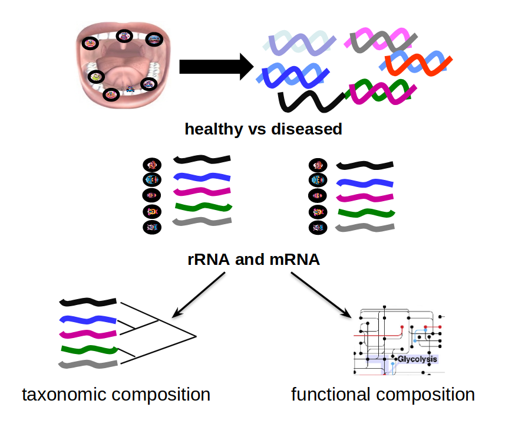

Network Analysis with Heinz
Contributors
 Sanne Abeln
Sanne Abeln  Chao (Cico) Zhang
Chao (Cico) Zhang
Questions
What is metatranscriptomics
Which pathways are potentially contributing to dental caries?
Objectives
Learn some background knowledge about microbiome
Understand metatranscriptomics
Familiarize yourself with KEGG terminology
Understand how network(pathway) analysis works
Metagenomics / metatranscriptomics
- Sequence all DNA/RNA in a sample from a specific microbial environment
- Get an overview of the entire microbial community
Speaker Notes There are several advantages in sequencing all DNA (metagenomics) or RNA (metatranscriptomics) in a sample to consider the microbial content.
Many bacterial species are not easily grown on a petri-dish, and may therefore not be observed with classic analysis techniques.
Metatranscriptomics can also reveal the functional state of the microbiome, suggesting which functional pathways are switched on.
The human microbiome
- Over 100 trillion microbes
- Outnumber our human cells 1.3 to 1.
- Include bacteria, fungi, protozoa, viruses, in and outside our body.
- The number of genes in all the microbes in one person’s microbiome is ~10-200 times the number of genes in the human genome.
- The microbiome may weigh as much as 200 grams
.image-50[  ]
]
.footnote[Sender et al 2016, PLoS ONE]
Speaker Notes
[*] this figure is difficult to estimate, as we need to consider when two orthologous genes can be considered different. A rough estimate would be 500~10000 species of bacteria with a median of 2000 genes.
Environments related to health
.pull-left[
- Gut / bowel / intestine
- Oral Cavity
- Nasal Cavity
- Skin
]
.pull-right[ ] —
What would we find?
.pull-left[
- Oral Cavity
- DNA from:
- bacteria
- viruses
- human
- archaea
- spider (?!) ]
.pull-right[ ]
Some bacterial species are difficult to culture
- Such bacteria may not be found in current reference databases
- The only way to obtain each species may be through direct sequencing of environmental samples
- Purpose: find novel species, genomes, and genes
Metagenomics vs 16S
.pull-left[ Full shotgun sequencing of sample:
- sequence all available DNA/ RNA
- may need to sequence very deep
- functional composition
Sequence ribosomal regions (16S)
- need amplicons
- requires less sequencing
- taxonomic composition
]
.pull-right[
.image-75[  ]
]
.image-75[  ]
]
] Speaker Notes For the workflow considered here we assume RNAseq of the microbiome.
Puzzle analogy: think of each organism as a jigsaw puzzle
-
shotgun: we considers all pieces (DNA) from all puzzles (organisms); we throw the pieces in a big pile, and need to reconstruct each individual puzzle from this. It is more complex, but you get full details (functional information) about the picture on each puzzle.
-
amplicon: we only look at the corner pieces, these are easy to spot, and all puzzles have them. It will not tell us all the details (e.g. functional information) of the picture on the puzzle, but might be enough to tell us whether it is a landscape or a portrait or abstract art for instance (taxonomy).
16S ribosomal DNA
- Multiple copies of 16S, 23S and 5S
- 16S: 9 hypervariable & 9 highly conserved regions
Speaker Notes 16S sequencing is still very popular to estimate the diversity of a microbiome. In this work we are also interested in the functional content.
Gum disease (priodontitis)
Speaker Notes For reference only
Microbiome

Speaker Notes
When we work with metagenomics data there are two main aims 1) profiling of the species content of the microbiome 2) a functional analysis of the microbiome.
MetaModules
Speaker Notes Here we consider the “metaModules” workflow designed by Ali May et a.
Exploring the networks of microbial function that are involved in disease
Speaker Notes The key idea is to explore functional networks of the microbiome that are involved in disease
Oral disease
.pull-left[
-
Dental caries The most common chronic disease of children (25%), and adolescents (59%). Bacteria feed on food debris. Bacteria produce acids leading to demineralization and destruction of the teeth.
-
Periodontal disease Bacteria living in tissues surrounding and supporting the teeth; An over-aggressive immune response can subsequently lead to loosening and finally loss of teeth.
]
.pull-right[
.image-75[ ]
.image-75[  ]
]
]
Healthy vs Disease
Speaker Notes The first part of the workflow entail RNA sequencing of oral microbiome samples.
From this we get the total RNA present, from all species, including ribosomal RNA.
This can be used to estimate both a taxonomic profile, and a functional profile.
With the workflow presented here, we go one step further, and consider which subnetworks in the metabolic pathways are most deregulated in the microbiome samples showing disease (caries).
Using knowledge to pinpoint the key players
Speaker Notes
So, now to the experimental design and analysis steps. We used a previously published metatranscriptomic dataset of microbial RNA reads from healthy and caries disease samples.
We did some preprocessing to filter out non-coding RNA etc, and mapped the remaining reads to a KEGG database of 3 million genes.
We calculated the gene counts in healthy and diseased samples and aggregated these gene counts in KOs.
This was followed b differential expression analysis at the KO level, from which we derived fold changes and P-values for KOs.
We use the P-values to obtain scores for each KO, use the scores to annotate the network and finally run an algorithm in the network to identify the maximum-scoring regions.
Some (KEGG database) terminology
Speaker Notes But let’s talk briefly about how we define these molecular functions first and get familiar with the terminology. In the database we use, KEGG, we have species and corresponding molecular pathways, like in this case S. Mutans and glycolysis.
Some (KEGG database) terminology
Speaker Notes Of course, each species has its own specific metabolic network - even though we may not have the information on all specific species in a sample.
Some (KEGG database) terminology
Speaker Notes Now, as orthologous genes in the different species perform the same function, we can collapse the metabolic network of all known bacterial species in to a single network. Here is node represents a KO: a KEGG Orthologous Group, containing orthologous genes performing the same metabolic function in the metabolic network. We use this network of KOs to analyse the microbial sample.
Functional signatures of microbiome-related disease
The most common objective is to identify differentially expressed pathways by performing comparative metagenomic/metatranscriptomic analyses.
Speaker Notes To understand the functional differences between two conditions, for instance in microbiome-related disease and health, what is commonly done is to look at differentially expressed pathways between the two conditions.
The figure on left shows the pathways that are significantly over- or under-abundant in diseased and healthy patients.
On the right is a figure from another study where researchers listed some important pathways and the KOs in these pathways that are up- (blue) or downregulated (red) in disease.
Speaker Notes We can now visualise the RNAseq data on our collapsed microbial metabolic network of KOs. The red nodes represent KOs that are overexpressed in disease, and the blue node those that are underexpressed in disease as compared to healthy samples.
It is immediately clear that the data contains many overexpressed genes, and it is difficult to immediately pinpoint the most deregulated part of the network. For this purpose, we use the Heinz methods to extract de most deregulated subnetwork.
Identifying signatures of disease
- Where are the most important regions in this large network?
- How can we find such regions?
Step 1: Construct a global network
Speaker Notes
The first step is to construct the global KO network, in the pratical this global network is already provided. As are the processed RNAseq values per KO.
Step 2: Annotate the network with weights
Speaker Notes
Next we need to convert the p-values provided by deseq for under and over- expression into weights. Where a positive weight means the KO is significantly deregulated.
Step 3: Calculate the maximum-scoring connected subnetwork
.pull-left[
-
Problem: given network with weights find the maximum-scoring subnetwork
-
NP-hard problem.
-
Solutions are feasible in biological networks.
-
An exact solver exists: Heinz [Dittrich et al., 2008].
]
.pull-right[
]
Speaker Notes
Subsequently, the Heinz algorithm can find the subnetwork that is most deregulated.
Differential Expression Analysis
Each dot’s (function’s) change in expression corresponds to a P-value
P-value distribution when the null hypothesis is true
Speaker Notes First, we need to convert the p-values to weight. Here we think about a p-value distribution on a set that has no signal. In this case we expect a uniform distribution of p-values between 0 and 1. Note that if you generate many p-values for a data set, it is always helpful to check the distribution to see if there is any signal in the data.
P-value distribution: signal vs noise
Noise (blue) and signal (red) in an expected P-value distribution Beta-uniform mixture model (mixing a beta and a uniform distribution )
Speaker Notes If there is a significant part of the data deregulated, we expect a peak on the left hand side of the distribution, i.e. an abundance of very low p-value as compared to the uniform distribution. This figure is very helpful, as we can estimate the number of true positives in the data: the part of the peak that rises above the uniform distribution.
P-value to weight transformation
\[FDR = \frac{C}{A+C}\]- A: True positives, C: False positives
- False discovery rate (FDR) -> a threshold P-value
Speaker Notes FP = false positives, TP = true positives
From the true positives, false positives and false negatives we can calculate the FDR (false discovery rate). Note that this is generally true for p-value distribution, and not specific for expression data.
False discovery rate (FDR) sets the threshold P-value
- The threshold P-value (τ) -> KOs with + and - weights
- FDR determines the number of positive-scoring nodes and therefore the size of the final subnetwork.
- In this dataset, an FDR=0.0007 corresponded to τ = 10^5
Speaker Notes From this we can calculate the FDR, and we can use an FDR threshold to determine which p-value should correspond the a zero weight.
Result: Weight-annotated network
red: weight > 0, grey: weight < 0
Speaker Notes Now we display the transformed weight onto the global KO network. Note that it is still difficult to spot the most deregulated subnetwork by eye.
Finding the subnetwork
.footnote[Dittrich,M.T. et al. (2008) Identifying functional modules in protein–protein interaction networks: an integrated exact approach. Bioinformatics, 24, I223–I231]
Speaker Notes Lastly, we use Heinz to find this deregulated subnetwork.
Result: gum disease subnetwork
7 pathways, 39 KOs (32 up- and 7 downregulated in disease)
.footnote[ Dinkla,K. et al. (2014) eXamine: exploring annotated modules in networks. BMCBioinformatics, 15, 201.]
Speaker Notes
Here we display the results not for a caries dataset, but a gum-disease data set. We will look at the caries data set in the practical.
Butanoate metabolism in gum disease
.pull-left[
.image-50[]
Green: Butanoate metabolism
.image-75[ ]
]
.pull-right[ Niederman et al., 1997: …butyric acid concentrations associated significantly with disease severity. Taken together, these data suggest that butyric acid plays a mediating role in periodontal disease pathogenesis.
Chang et al., 2013: …butyrate generated by periodontal pathogens may be involved in the pathogenesis of periodontal diseases via the induction of ROS production and the impairment of cell growth, cell cycle progression and expression of cell cycle-related genes in GFs. ]
Speaker Notes Some of the pathways found in the deregulated subnetwork have previously been associated with gum-disease, but are here found by simply analysing high-throughput data.
Sulfur metabolism in gum disease
.pull-left[
.image-50[ ]
Coral: Sulfur metabolism
.image-50[ ]
]
.pull-right[
Langendijk et al 2001: Sulfate-reducing bacteria (SRB) may be etiologically involved in destructive periodontal diseases. These strictly anaerobic bacteria utilize fermentation products for energy conservation by reduction of sulfate to sulfide. This toxic product can accumulate in periodontal pockets in concentrations causing cellular destruction. SRB depend on an actively degrading microbiota to produce a reduced environment, fermentation products and sulfate. The detection frequency of these bacteria is strongly increased in periodontitis compared with healthy sites in the oral cavity.
]
Potentially interesting pathways
Also some potentially interesting novel pathways have been found.
Real biology vs. 500 random networks
Speaker Notes Lastly, it is possible to check how significant the deregulated subnetwork itself is. This goes beyond the scope of the practical work.
Practical
- Work on caries data set for a network analysis
- Get a feel of running each tool, mentally map the parameters/options back to the method mentioned in this presentation.
- Save all the steps into a workflow and rerun it.
Key Points
- Analyzing differential expression for (meta)transcriptomics data
- Validating the p-value distribution of the differential expression analysis
- Finding the most differentially expressed subnetwork in a gene functional network using Heinz
- Interpreting the pinpointed subnetwork
Thank you!
This material is the result of a collaborative work. Thanks to the Galaxy Training Network and all the contributors! This material is licensed under the Creative Commons Attribution 4.0 International License.
This material is licensed under the Creative Commons Attribution 4.0 International License.